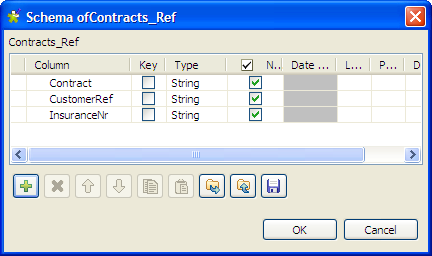

|
Famille de composant |
File/Input | |
|
Fonction |
Le composant tFileInputPositional lit un fichier ou un flux de données ligne par ligne et extrait les champs selon un modèle (pattern). | |
|
Objectif |
tFileInputPositional lit un fichier ou un flux de données ligne par ligne, sépare les champs tels que définis par le schéma et passe les données extraites au composant suivant via une connexion de type Row. | |
|
Basic settings |
Property type |
Peut être Built-in ou Repository. |
|
|
|
Built-in : Propriétés utilisées ponctuellement. |
|
|
|
Repository : Sélectionnez le fichier où sont stockées les propriétés du composant. Les champs suivants sont alors pré-remplis à l’aide des données collectées. |
|
|
File name/Stream |
File name : Chemin d’accès et nom du fichier à traiter. Stream : Flux de données à traiter. Les données doivent préalablement être mises en flux afin d’être récupérées par le tFileInputPositional via la variable représentative correspondante. Cette variable peut être prédéfinie dans votre Studio ou fournie par le contexte ou les composants utilisé(s) avec ce composant, par exemple la variable INPUT_STREAM du tFileFetch. Sinon, vous pouvez la définir manuellement et l’utiliser selon votre Job, par exemple à l’aide d’un tJava ou d’un tJavaFlex. Afin d’éviter les désagréments de la saisie, vous pouvez sélectionner la variable qui vous intéresse dans la liste d’autocomplétion (Ctrl+Espace) afin de remplir le champ, si cette variable a été correctement définie. Pour plus d’informations concernant les variables disponibles, consultez leGuide utilisateur de Talend Open Studio. Pour plus d’informations concernant les flux d’entrée consultez la section intitulée « Scénario 2 : Lire les données d’un fichier distant en mode stream ». |
|
|
Row separator |
Chaîne (ex : “\n” sous Unix) séparant les lignes. |
|
|
Use byte length as the cardinality |
Cochez cette case pour permettre la prise en charge des caractères à deux octets dans ce composant. Pour cette fonction, JDK 1.6 est requis. |
|
|
Customize |
Cochez cette case pour personnaliser le format des données du fichier positionnel et renseignez les colonnes du tableau Formats. Column : Sélectionnez la colonne que vous souhaitez personnaliser. Size : Saisissez la taille correspondant à la colonne. Padding char : Saisissez entre guillemets le caractère de remplissage utilisé afin qu’il soit supprimé de votre champ. Le caractère par défaut est un espace. Alignment : Sélectionnez le paramètre d’alignement approprié. |
|
|
Pattern |
Longueurs séparées par des virgules, interprétées comme une chaîne de caractères entre guillemets. Vérifiez que les valeurs saisies dans ce champ sont cohérentes avec le schéma défini. |
|
|
Skip empty rows |
Cochez cette case pour ignorer les lignes vides. |
|
|
Uncompress as zip file |
Cochez cette case pour décompresser le fichier d’entrée. |
|
|
Die on error |
Cette case est cochée par défaut et stoppe le Job en cas d’erreur. Décochez cette case pour terminer le traitement avec les lignes sans erreurs, et ignorer les lignes en erreur. Vous pouvez récupérer les lignes en erreur, si vous le souhaitez. Pour cela, utilisez un lien Row > Reject. |
|
|
Header |
Nombre de lignes à ignorer au début d’un fichier. |
|
|
Footer |
Nombre de ligne à ignorer à la fin d’un fichier. |
|
|
Limit |
Nombre maximum de lignes à traiter. Si Limit = 0, aucune ligne n’est lue ou traitée. |
|
|
Schema et Edit Schema |
Un schéma est une description de lignes, i.e., il définit le nombre de champs qui sont traités et passés au composant suivant. Le schéma est soit local (Built-in), soit distant dans le Repository.
|
|
|
|
Built-in : Le schéma sera créé et conservé pour ce composant. Voir également leGuide utilisateur de Talend Open Studio. |
|
|
|
Repository : Le schéma existe déjà et est stocké dans le Repository. Ainsi, il peut être réutilisé dans divers projets et Job designs. Voir également leGuide utilisateur de Talend Open Studio. |
|
Advanced settings |
Needed to process rows longer than 100 000 characters |
Cochez cette case si les lignes à traiter dans le fichier d’entrée font plus de 100 000 caractères de long. |
|
|
Advanced separator (for numbers) |
Cochez cette case pour modifier les séparateurs utilisés pour les nombres : Thousands separator : configurez le séparateurs des milliers. Decimal separator : configurez le séparateur pour les décimaux. |
|
|
Trim all columns |
Cochez cette case pour supprimer les espaces en début et en fin de champ dans toutes les colonnes. |
|
|
Check columns to trim |
Cochez la case devant le nom de chacune des colonnes dont vous souhaitez supprimer les espaces de début et de fin de champ. |
|
|
Validate date |
Cochez cette case pour vérifier strictement le format de la date par rapport au schéma d’entrée. |
|
|
Encoding |
Sélectionnez l’encodage à partir de la liste ou sélectionnez Custom et définissez-le manuellement. Ce champ est obligatoire pour la manipulation des données des bases de données. |
|
|
tStatCatcher Statistics |
Cochez cette case pour collecter les données de log au niveau du Job, ainsi qu’au niveau de chaque composant. |
|
Utilisation |
Utilisez ce composant pour lire un fichier et séparer les champs à l’aide du séparateur spécifié. Ce composant permet de créer un flux de données à l’aide d’un lien Row > Main, ainsi que de créer un flux de rejet avec un lien Row > Reject filtrant les données dont le type ne correspond pas au type défini. Pour un exemple d’utilisation de ces deux liens, consultez la section intitulée « Scénario 2 : Extraire les données XML erronées dans un flux de rejet » du composant tFileInputXML. | |
Le scénario suivant construit un Job avec deux composants, qui a pour objectif de lire les données d’un fichier positionnel en entrée et de rendre des données sélectionnées en sortie (selon leur position) dans un fichier XML.
Contract CustomerRef InsuranceNr 00001 8200 50330 00001 8201 50331 00002 8202 50332 00002 8203 50333
Cliquez et déposez un composant tFileInputPositional de la Palette dans l’espace de modélisation.
Cliquez-déposez un composant tFileOutputXML. Ce fichier recevra les références de manière structurée.
Cliquez-droit sur le composant tFileInputPositional et sélectionnez une connexion Row > Main. Glissez cette connexion vers le composant tFileOutputXML et relâchez la souris lorsque le symbole de prise de courant apparaît.
Sélectionnez le composant tFileInputPositional pour afficher sa vue Basic settings et définir ses propriétés.

Les propriétés de ce Job sont de type Built-in pour ce scénario.
Par conséquent, les informations de propriétés sont renseignées pour ce Job seulement et ne peuvent être réutilisées pour un autre Job, contrairement à des propriétés de type Repository.
Renseignez le chemin d’accès au fichier dans le champ File Name. Ce champ est obligatoire.
Puis définissez le séparateur de lignes (Row separator) permettant d’identifier la fin de la ligne : le retour chariot par défaut.
Si nécessaire, cochez la case Use byte length as the cardinality pour permettre la prise en charge des caractères à deux octets.
Puis dans le champ Pattern définissant les champs d’une ligne. Le pattern est une série de longueurs correspondant aux valeurs de champs du fichier en entrée. Les valeurs doivent être saisies entre guillemets simples et séparées par une virgule. Veillez à ce que les valeurs saisies correspondent à la longueur des champs définis dans le schéma.
Renseignez les champs d’en-tête (Header), de pied de page (Footer) et de limite (Limit) selon la structure de votre fichier d'entrée et selon vos besoins. Dans ce scénario, ignorez la première ligne lors de la lecture du fichier d'entrée en saisissant 1 dans le champ Header et laissez les autres champs tels qu'ils sont.
Dans la liste Schema, sélectionnez Repository si le schéma d'entrée est stocké dans le Repository. Dans ce scénario, sélectionnez Built-In pour définir les données à transmettre au composant tFileOutputXML.
Vous pouvez sélectionner et/ou modifier le schéma via la fonction Edit Schema. Pour ce schéma, définissez trois colonnes, respectivement Contracts, CustomerRef et InsuranceNr correspondant aux trois valeurs de longueurs définies. Cliquez sur OK pour fermer la boîte de dialogue [Schema] et propager les modifications.

Double-cliquez sur le composant tFileOutputXML afin d'afficher sa vue Basic settings et configurer ses propriétés de base.

Saisissez le chemin d’accès au fichier XML de sortie.
Définissez la balise de la ligne (Row tag) qui définit chaque ligne. Dans ce cas, la balise est ContractRef.
Cliquez sur le bouton [+] à côté du champ Edit Schema pour voir la structure de données, puis cliquez sur Sync columns pour récupérer la structure des données du composant d'entrée.
Cliquez sur l'onglet Advanced settings afin de configurer les paramètres avancées de la sortie XML.

Cliquez sur le bouton [+] pour ajouter une ligne dans la table Root tags et saisissez un nom de balise (ou plusieurs) pour encadrer la structure XML de sortie, ContractsList dans ce scénario.
Configurez les paramètres dans la table Output format si nécessaire. Par exemple, cochez la case As attribute d'une colonne si vous souhaitez utiliser son nom et sa valeur comme attribut pour l'élément XML parent. Décochez la case Use schema colum name pour que la colonne réutilise le libellé de la colonne d'entrée comme libellé de la balise. Dans ce scénario, laissez les paramètres par défaut.
Pour regrouper les lignes de sortie selon le numéro de contrat, cochez la case Use dynamic grouping, ajoutez une ligne dans la table Group by, sélectionnez Contract dans la liste Column et saisissez un attribut pour cette colonne dans le champ Attribute label.
Laissez les autres paramètres tels qu'ils sont.
Appuyez sur les touches Ctrl+S afin de sauvegarder votre Job et vous assurer que tous les paramètres sont bien pris en compte.
Appuyez sur F6 ou cliquez sur l'onglet Run puis sur le bouton Run pour exécuter le Job.
Le fichier est lu ligne par ligne selon les longueurs définies précédemment dans le champ Pattern et écrit en tant que fichier XML, comme défini dans les paramètres de sortie. Vous pouvez l’ouvrir dans n’importe quel éditeur XML standard.